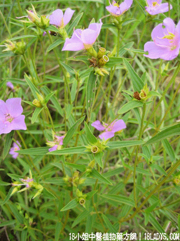

(本文解释权归中药材天地网兄弟站-18小姐中医植物药方网所有,如需转载请注明出处)
天香炉(中药材植物名:金锦香)(植物科目:野牡丹科)

别名：金钟草、金香炉。
植物名：金锦香。
生长环境：本品为直立草本或亚灌木。常生于山野或山岗上，荒地上。
分布：印度、马来西亚、日本、我国产西南部及台湾、广州近郊常见之。
入药部分：全草。
采集期：夏、秋季。
自采地点：山岗。
性味：性平、味淡。
功能：理肠胃、清湿热。
主治、用量和用法：1、湿火骨痛；2、湿热肚痛；3、红白痢，以上三种病，均干用1～2两，清水煎服；4、大便下血：干用1～2两，清水煎后加白糖服。
验方：（大肠湿热方）天香炉5钱、锦地罗5钱、木棉花5钱、鸡蛋花3钱、清水两碗半，煎成一碗，温服。
（方解）天香炉、锦地罗化秽利湿；木棉花、鸡蛋花清热去湿解毒。合成治疗大肠湿热而致下利之剂。
（方歌）大肠湿热勿歇疴，天香炉与锦地罗，鸡蛋木棉两花合，湿清热解效良多。
参考资料：《广东中医选集第一集》万顷沙人民医院以金香炉等草药治阑尾炎，三剂全愈。处方：金香炉5钱、金不换6钱、山芝麻6钱、白立头6千斤拔5钱、铁色金4钱、鸡骨香5钱、凤凰鸡5钱，净水煎服。
(本文解释权归中药材天地网兄弟站-18小姐中医植物药方网所有,如需转载请注明出处)